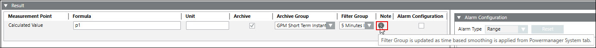
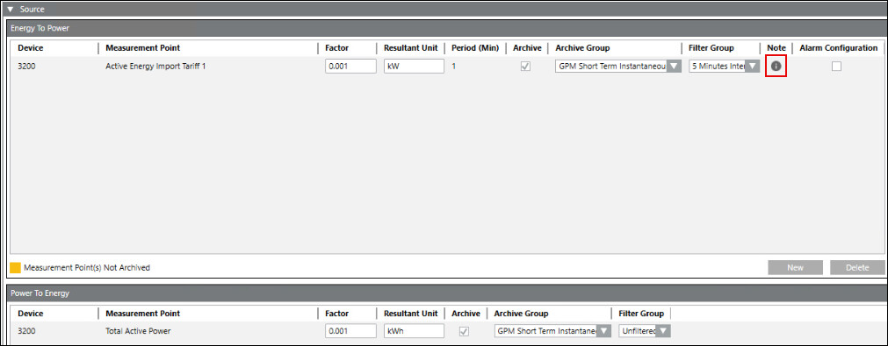
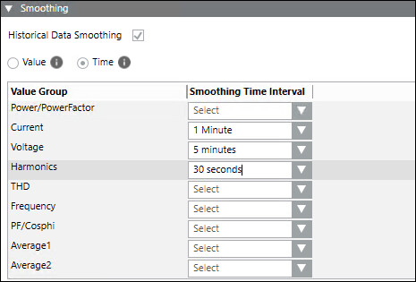

Note
- Displays the information for the measurement points, if time based smoothing is applied from the system node.
Time based smoothing allows you to apply smoothing for the archived measurement points based on the selected Value Group and Smoothing Time Interval from the system node. Smoothing applied at the system node for any value group is reflected in the device node measurement points, only if the measurement point or measurement point group is archived. - For more information about the smoothing, see the Smoothing expander in the System Tab section.
- If time based smoothing is defined for any value group at the system node, it is indicated in the Note section of the Measurement Points expander at the device node (physical and virtual devices). It is possible to modify the filter group values from the device node after applying time based smoothing.
The filter group in the device node always takes the latest value, either from the system node smoothing or from the device node. After applying time-based smoothing from the system node and changing the filter group value in the device configuration, the Note icon will disappear.
NOTE: If any of the measurement points Flow, Volume, Temperature, or Counter are archived and time based smoothing is defined for any group from the system node, then the archive and filter group fields in the device node retains the default values. - In case of logical devices, time based smoothing is applicable for Calculation and Converter logical devices and it is indicated in the Note field of the Result expander at the device node.
- Note for the Calculation device is shown in the below image:

- Note for the Converter device is shown in the below image:

- For the Calculation and Converter logical devices, the Filter Group value in the device node takes the highest Smoothing Time Interval value from the system node if multiple smoothing intervals are defined for the value groups.

Referring to the above image, the filter group in the logical devices takes the highest value (5 minutes) from the time based smoothing interval values.
For more information about the smoothing, see the Smoothing expander in the System Tab section.